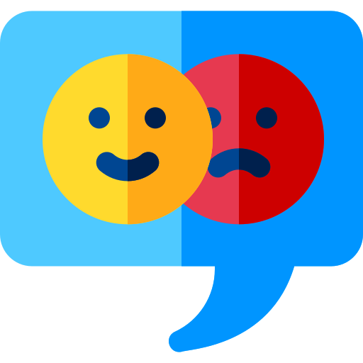
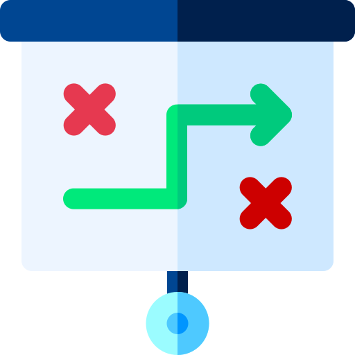

Allegro Smart
Zwiększenie atrakcyjności tej usługi dla młodych użytkowników
Badanie potrzeb użytkowników, mapa empatii, mapy podróży użytkowników, kwestionariusze i wywiady pogłębione.
O firmie
Allegro od kilku lat oferuje swoim użytkownikom usługę Allegro Smart, czyli abonament, w ramach którego otrzymują m.in. darmowe dostawy przy zamówieniach o wartości co najmniej 40 zł od jednego sprzedawcy.
Okazało się jednak, że Smart nie jest popularny wśród młodych osób, więc Allegro uruchomiło dodatkowo Smart Student, w którym studenci poza standardowymi korzyściami Smarta otrzymują dodatkowe benefity, np. zniżki do kina czy na komunikację.
Zadanie:
Naszym problemem badawczym było to, dlaczego studenci nie korzystają z Allegro Smart i jak zwiększyć atrakcyjność usługi wśród nich.
Naszym celem było zebranie informacji, które pomogłyby nam uatrakcyjnić usługę Smart dla młodych użytkowników.
Rozwiazanie:
Przeprowadzono badanie, którego głównym celem było uzyskanie informacji na temat małej popularności usługi SMART wśród młodych użytkowników oraz sposobu jej uatrakcyjnienia. Na podstawie ankiety respondenci zostali podzieleni na dwie podgrupy: subskrybentów SMART oraz osoby niekorzystające ze SMART. Przebadano 100 osób, z których 12 wzięło udział w wywiadzie pogłębionym.
Moja rola:
Osobiście uczestniczyłam w każdym etapie projektu. Najbardziej zaangażowałam się w:
- przeprowadzenie wywiadów pogłębionych
- analizę transkryptów wywiadów oraz
- przygotowanie i prezentację raportu końcowego.
Tools:
Miro
Zoom
MS Teams
MS Excel
Google Forms
Google Docs
Google Prezentacje
Workflow:
Analiza konkurencji

Badanie opinii
Tworzenie person
Design sprint
Prototypowanie
Testy użyteczności
Analiza wyników

Raport końcowy
Czego się nauczyłam:
- Analizować ścieżkę użytkownika
- Przeprowadzać wywiad z osobami badanymi
- Sporządzać i analizować transkrypt poszczególnego wywiadu
- Tworzyć różne ścieżki odpowiedzi w ankiecie
- Bardziej efektywnie szukać informacje w Internecie
Co zostało zrobione:
- Analiza sklepu i 3 konkurentów
- Analiza dostępnych badań w podobnym kierunku
- Sprint projektowy, burza mózgów na temat planu badań
- Kwestionariusz z poszczególnymi ścieżkami odpowiedzi
- Scenariusze dla kilku wersji wywiadów pogłębionych
- Zorganizowano i przeprowadzono badanie
- Analiza wyników badania
- Propozycja rozwiązań
- Raport końcowy